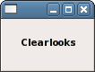

Metacity
Dieser Artikel wurde für die folgenden Ubuntu-Versionen getestet:
Dieser Artikel ist mit keiner aktuell unterstützten Ubuntu-Version getestet! Bitte diesen Artikel testen und das getestet-Tag entsprechend anpassen.
Zum Verständnis dieses Artikels sind folgende Seiten hilfreich:
 Metacity war der Standard-Fenstermanager der Desktop-Umgebung GNOME 2 und folgte dessen Philosophie: wenige Zusatzfunktionen, versteckte Konfigurationsmöglichkeiten, aber dafür durchdachte Standardeinstellungen. Als Erweiterung fungieren Projekte wie Devil's Pie und Brightside, die Funktionen für fortgeschrittene Benutzer nachreichen. Metacity kann auch mit anderen Desktop-Umgebungen verwendet werden.
Metacity war der Standard-Fenstermanager der Desktop-Umgebung GNOME 2 und folgte dessen Philosophie: wenige Zusatzfunktionen, versteckte Konfigurationsmöglichkeiten, aber dafür durchdachte Standardeinstellungen. Als Erweiterung fungieren Projekte wie Devil's Pie und Brightside, die Funktionen für fortgeschrittene Benutzer nachreichen. Metacity kann auch mit anderen Desktop-Umgebungen verwendet werden.
Die Entwicklung von Metacity wurde von Havoc Pennington begonnen, welcher ihn unter der GPL veröffentlichte. Vor der Einführung von Metacity mit GNOME 2.2 benutzte GNOME zuerst Enlightenment und später Sawfish als Fenstermanager. Mit Compiz (Unity) und Mutter (GNOME 3) sind inzwischen Nachfolger des Programms im Einsatz. Ubuntu 11.04 war die letzte Ubuntu-Version, unter der Metacity vorinstalliert war.
Beim GNOME-2-Nachfolger MATE wurde Metacity in Marco umbenannt.
Installation¶
Folgendes Paket muss installiert [1] werden:
metacity
 mit apturl
mit apturl
Paketliste zum Kopieren:
sudo apt-get install metacity
sudo aptitude install metacity
Benutzung¶
Tastenkürzel¶
Die standardmäßig verwendeten Tastenkombinationen:
| Tastenkürzel (vorwärts) | Beschreibung | ggf. Tastenkürzel (rückwärts) |
| Alt + Tab ⇆ | Fensterfokus wechseln | Alt + ⇧ + Tab ⇆ |
| Strg + Alt + Tab ⇆ | Fokus zwischen den Panels wechseln | Strg + Alt + ⇧ + Tab ⇆ |
| Strg + Alt + → | Arbeitsfläche wechseln | Strg + Alt + ← |
| Strg + Alt + D , ab Ubuntu 10.10 Windows + D | alles minimieren, um den Desktop zu zeigen | |
| Alt + Esc | Fensterfokus ohne Anzeige wechseln |
Konfiguration¶
Experten-Info:
Unter "/apps/metacity" kann man folgende Untereinträge manuell anpassen:
general - hier finden sich nahezu alle Einstellungen
global_keybindings - hier liegen systemweite Tastenkombinationen, da sich nicht alle über ein Menü in GNOME zuweisen lassen.
keybindings_commands - hier kann der Benutzer selbstgewählte Tastenkombinationen festlegen - siehe GNOME Tastenkürzel.
window_keybindings - Tastenkombinationen für Fenster-Aktionen.
workspace_names - Konfiguration der Arbeitsflächen
Bequemer ist jedoch die Konfiguration über das GNOME-Systemmenü:
Tastenkürzel¶
Manche Tastenkürzel, die Metacity steuern, sind in "System -> Einstellungen -> Tastenkombinationen" zu finden und lassen sich dort ändern.
Arbeitsflächen¶
Die Anzahl und Namen der Arbeitsflächen können in den Einstellungen des Arbeitsflächenumschalters geändert werden.
Fenstereinstellungen¶
Die hauptsächlichen Optionen für Metacity sind unter "System -> Einstellungen -> Erscheinungsbild" zu finden:

Rahmen¶
Das Aussehen der Fensterrahmen lässt sich unter "System -> Einstellungen -> Erscheinungsbild -> Thema -> Anpassen... -> Fensterrahmen" konfigurieren. Viele GTK Engines bringen eigene Themen für Fensterrahmen mit, lassen sich jedoch auch unabhängig davon installieren und auswählen. Im Paket [1]
metacity-themes (universe, [2])
befinden sich bereits ein paar weitere geprüfte Themen für Fensterrahmen. Weitere Themen befinden sich auf den einschlägigen Seiten unter den Begriffen "Fensterrahmen", "Window Border" oder "Metacity" selber.
Mithilfe von Devil's Pie ist es möglich, die Fensterdekoration zu entfernen.
Schrift¶
Schriftart und -größe der Schrift in den Fenstertiteln findet sich unter "System -> Einstellungen -> Erscheinungsbild -> Schriftarten -> Schrift in Fenstertiteln"
Animationen¶
Achtung!
Das Aktivieren der Hilfstechnologien hat zur Folge, dass manche Anwendungen nicht mehr starten wollen. Startet man z.B. Gnomebaker oder Gobby, erhält man in einem Terminalfenster die Meldung "GThread system may only be initialized once.aborting...". Sobald man die Hilfstechnologien wieder deaktiviert, ist der Fehler weg. Außerdem kann das Aktivieren der Hilfstechnologien die Listenansicht in Nautilus drastisch verlangsamen (Ursache ist ein Bug).
Beim Minimieren von Fenstern wird auf dem Desktop eine Abfolge von schwarzen Rahmen gezeichnet, was nicht jedermanns Sache ist. Deswegen hier nun der Weg, wie man sie entfernen kann. Zuerst öffnet man den Konfigurationseditor [3] und hangelt sich dann zu folgendem Punkt durch:
"apps -> metacity -> general"
Dort setzt man bei der Option "reduced_resources" einen Haken. Nun werden keine schwarzen Rahmen mehr beim Minimieren von Fenstern angezeigt, jedoch wird nun auch der Inhalt der Fenster beim Verschieben nicht mehr angezeigt. Um dieses Problem zu beheben, öffnet man
"System -> Einstellungen -> Barrierefreiheit -> Einstellungen der Hilfstechnologien"
und setzt im sich öffnenden Fenster bei "Hilfstechnologien aktivieren" ein Häkchen und schließt das Fenster danach. Nun ist der Inhalt der Fenster beim Verschieben wieder zu sehen. Zu beachten ist allerdings, dass nach dieser Änderung beim Verschieben von Fenstern kurzfristig eine 100% CPU-Last erzeugt wird.
Daneben besteht die Möglichkeit, die Rahmen im Konfigurationseditor [3] über
"desktop -> gnome -> interface -> enable_animations"
zu deaktivieren, ohne dass der Fensterinhalt beim Verschieben nicht mehr angezeigt wird. Diese Methode ist deshalb den "reduced_resources" vorzuziehen.
Effekte¶
Hinweis:
Werden Metacitys Effekte aktiviert, so startet Compiz nicht mehr (siehe 178953  ). Möchte man also nach dem Testen des Compositors von Metacity wieder Compiz benutzen, so müssen die Effekte auf jeden Fall zuerst wieder deaktiviert werden.
). Möchte man also nach dem Testen des Compositors von Metacity wieder Compiz benutzen, so müssen die Effekte auf jeden Fall zuerst wieder deaktiviert werden.
Metacity beherrscht einige wenige Effekte. Dabei ist zu beachten, dass Metacity hier nicht mit den 3D-Effekten von Compiz konkurrieren möchte. Compositing soll primär transparente Bereiche in Fenstern ermöglichen. Sich drehende Würfel oder wabbelnde Fenster findet man bei Metacity nicht und Optionen zum Einstellen gibt es keine.
Um die Effekte zu aktivieren, muss mit dem GNOME-Konfigurationseditor der Schlüssel "apps -> metacity -> general -> compositing_manager" auf "true" gesetzt werden. Alternativ erreicht man dasselbe durch die folgenden Befehle [2]:
# Compositing in Metacity aktivieren gconftool-2 -s --type bool /apps/metacity/general/compositing_manager true # Compositing in Metacity deaktivieren gconftool-2 -s --type bool /apps/metacity/general/compositing_manager false
Alternativ kann man mit folgendem Skript den jeweils aktuellen Wert umkehren:
#!/bin/bash if ( `gconftool-2 -g /apps/metacity/general/compositing_manager` ); then gconftool-2 -s --type bool /apps/metacity/general/compositing_manager false & else gconftool-2 -s --type bool /apps/metacity/general/compositing_manager true & fi
Dieses Skript kann man sich als Programmstarter in ein Panel legen.
 Übersichtsartikel
Übersichtsartikel- Erstellt mit Inyoka
-
 2004 – 2017 ubuntuusers.de • Einige Rechte vorbehalten
2004 – 2017 ubuntuusers.de • Einige Rechte vorbehalten
Lizenz • Kontakt • Datenschutz • Impressum • Serverstatus -
Serverhousing gespendet von